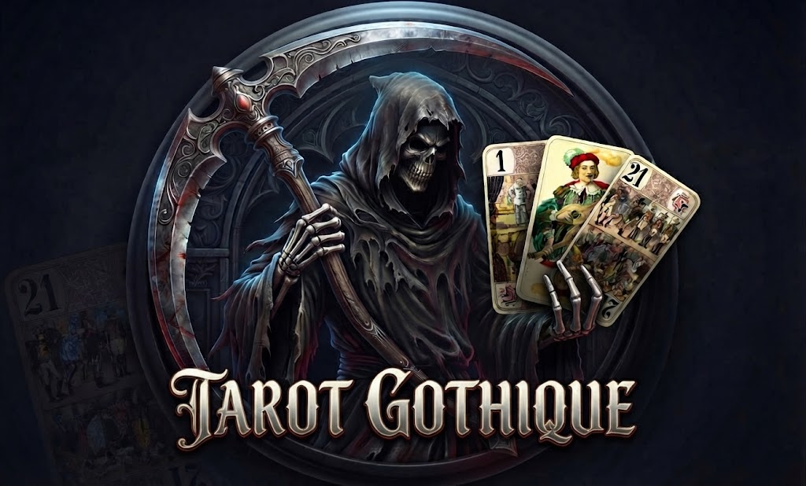

Galerie d'images du Jeu de Tarot Gothique
Aperçu visuel des illustrations, cartes et univers sombres de notre jeu de tarot en ligne.

Jeu de Tarot Gothique
Visuel principal du jeu de tarot avec la Faucheuse et les atouts traditionnels.
Aperçu visuel des illustrations, cartes et univers sombres de notre jeu de tarot en ligne.

Visuel principal du jeu de tarot avec la Faucheuse et les atouts traditionnels.